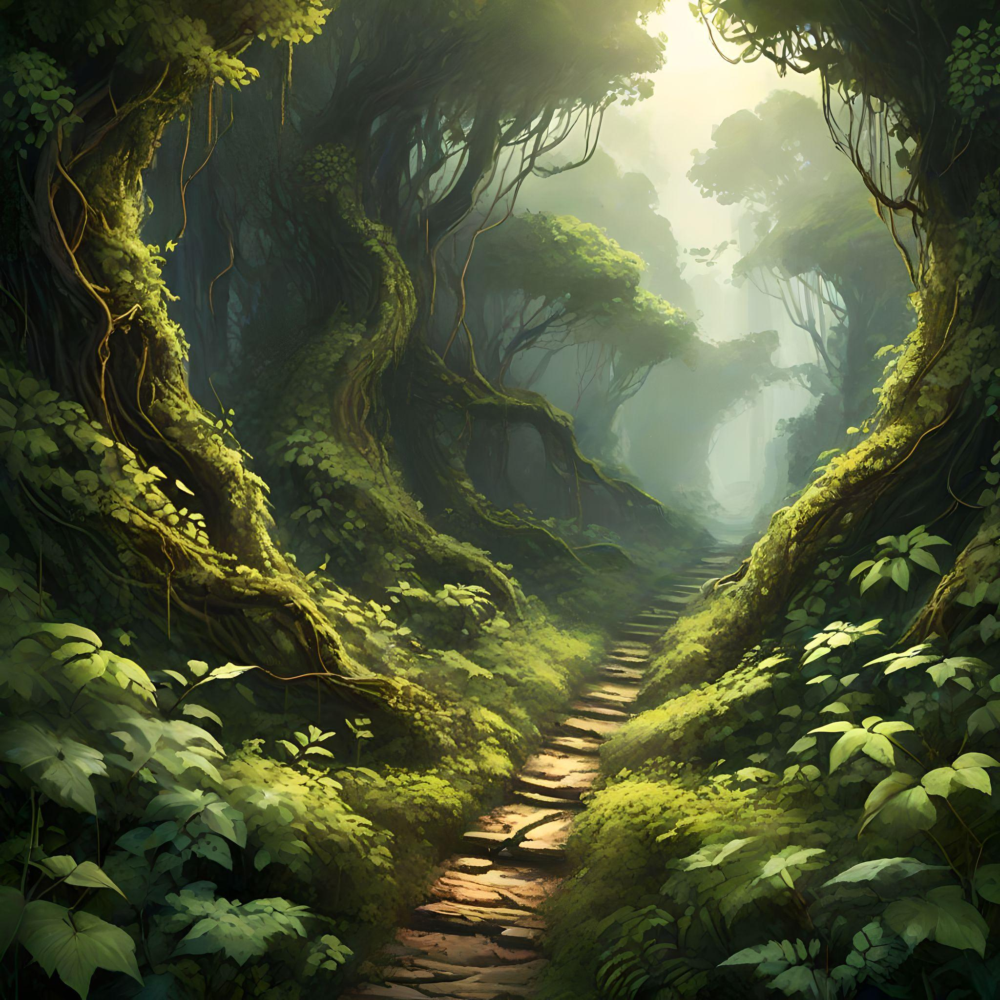

<body>

   <head>
       <link rel="stylesheet" type="text/css" href="style.css" />
   </head>
   
   <head>
<link href='https://fonts.googleapis.com/css?family=Aladin' rel='stylesheet'>
<style>
body {
    font-family: 'Aladin';font-size: 22px;
}
</style>
      <center>
</head>
    <div class= "description">
    <h3> You choose the left path, feeling a sense of curiosity about where it might lead. The path winds its way through a dense thicket of bushes and vines, eventually opening up into a small clearing. </h3>
    </div>
    
    
    <h2> CHOOSE  A  PATH </h2>
  </center>
  
  <center>
  <h3>
  <div1>
     <a href="clearing.html">Investigate the Clearing </a>
  </div1>
  <div2>
    <a href="continue2.html">Continue Along the Path </a>
  </div2>
  </h3>
  </center>
  
</body>

